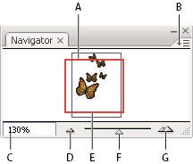

Navigator panel overview
You use the Navigator panel (Window > Navigator) to quickly change the view of your artwork using a thumbnail display. The colored box in the Navigator (called the proxy view area) corresponds to the currently viewable area in the illustration window.

Navigator panel
- A.
- Thumbnail display of artwork
- B.
- panel menu button
- C.
- Zoom box
- D.
- Zoom Out button
- E.
- Proxy preview area
- F.
- Zoom slider
- G.
- Zoom In button
You can customize the Navigator panel in the following ways:
- To display artwork outside the boundaries of the artboard in the Navigator panel, click View Artboard/Crop Area Only from the panel menu to deselect it.
- To change the color of the proxy view area, select panel Options from the panel menu. Select a preset color from the Color menu, or double-click the color box to choose a custom color.
- To display dashed lines in the document as solid lines in the Navigator panel, select panel Options from the panel menu and select Draw Dashed Lines As Solid Lines.
- To specify the size at which text is replaced by a gray bar in the Navigator panel, select panel Options from the panel menu and enter a font size in the Greeking box.